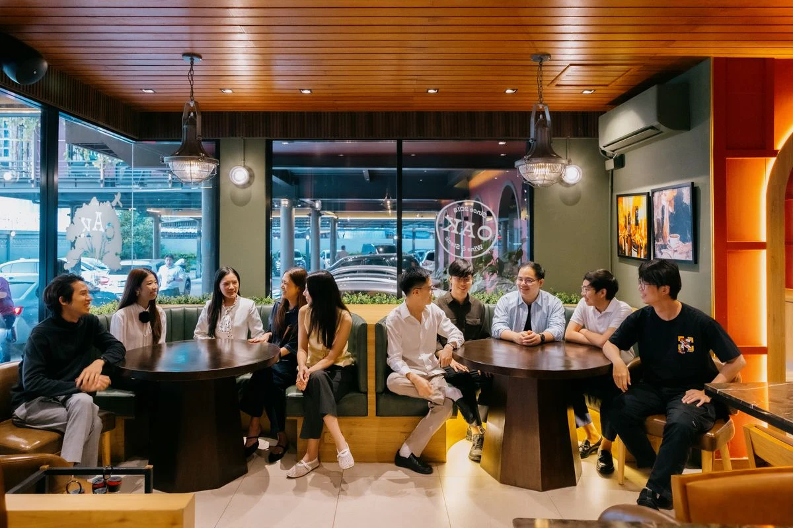
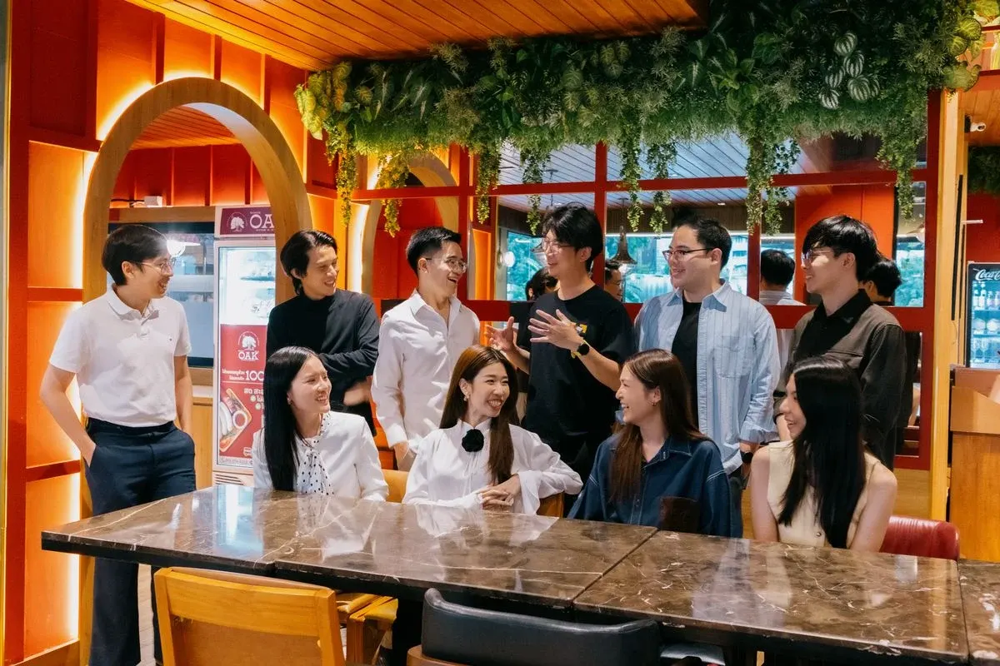
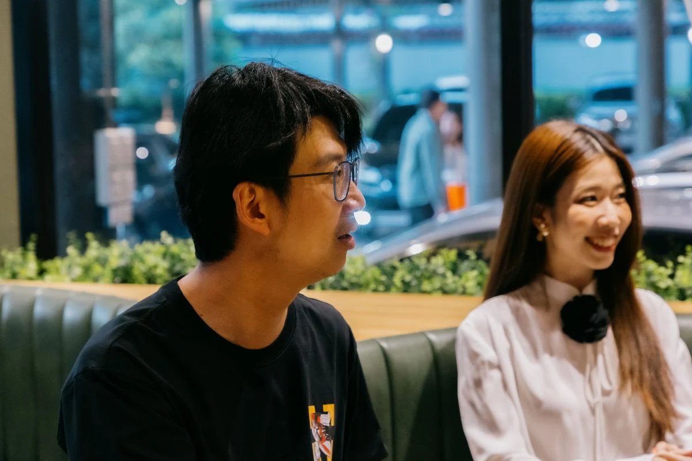
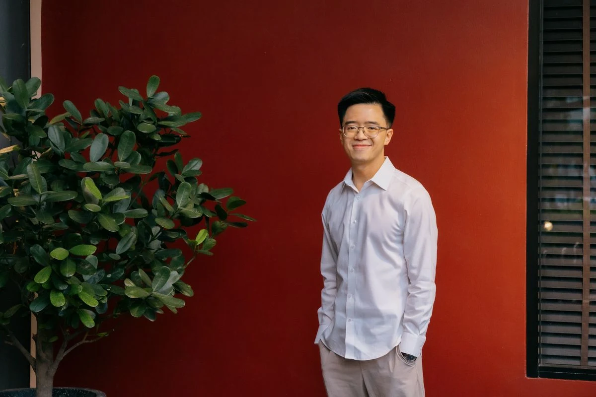
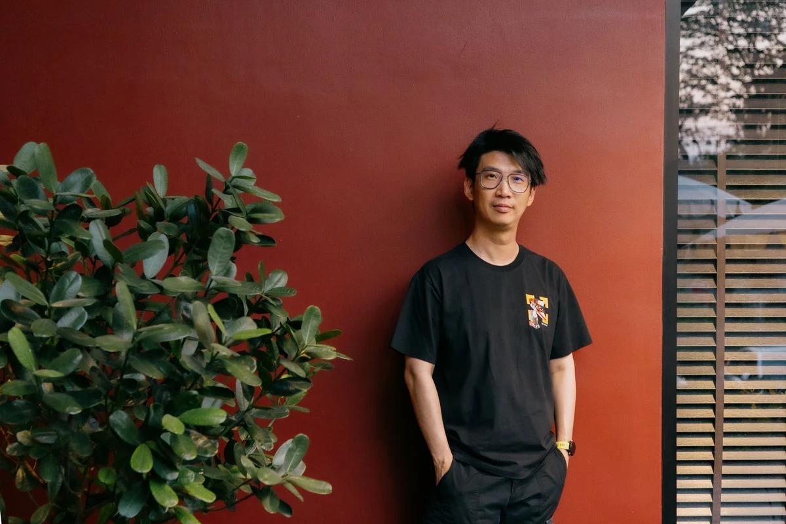
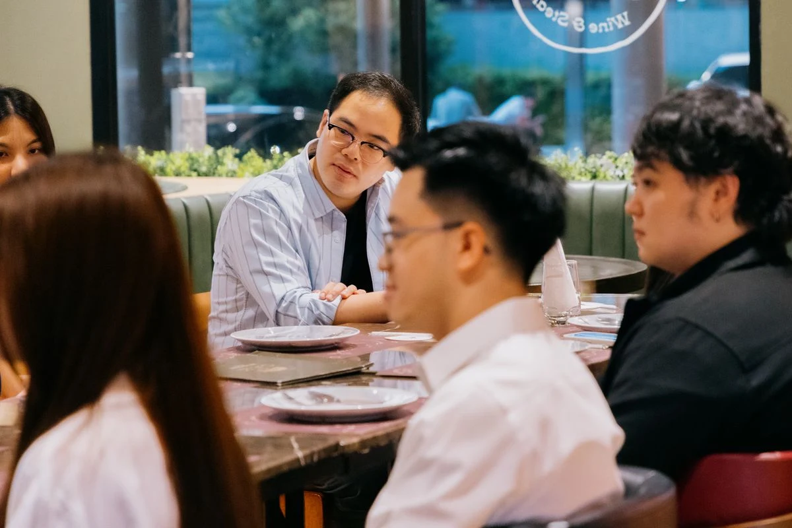
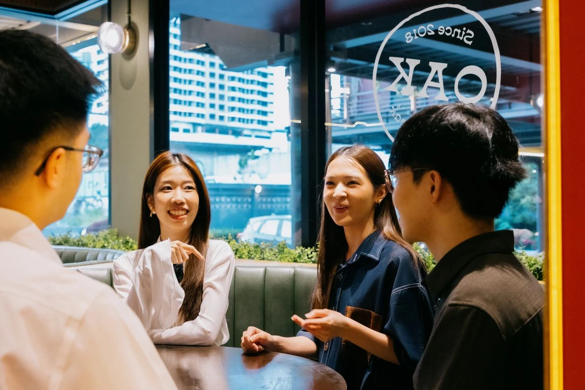

Our Journey & Philosophy
About Flow's Table
Main content
Behind the scenes of the no-agenda dinner circle connecting builders, dreamers, and mentors.
The Story Behind the Table
Every legendary story begins around a dinner table. In 2025, Mac Nattapong Vivattanaprasert, a second-generation entrepreneur, set out on a simple mission: to learn from the brightest minds in business and finance. In a fast-changing world, he sought the wisdom of those who had successfully navigated market cycles before him.
At a business seminar, Mac crossed paths with two of Thailand’s most respected Value Investors: P'Mi Tiwa Shintadapong and P'Jekky Suthon Singhasitthangkul. Rather than requesting a formal interview or a pitch meeting, Mac did something different. He invited them to share a meal alongside a small circle of ten close friends, setting a relaxed environment where everyone could speak freely.
What followed was an inspiring five-hour flow of business insights, life philosophies, and personal wisdom. The chemistry was electric, and the sense of fulfillment was mutual. Recognizing the rare value of this gathering, Mi suggested they make it a quarterly tradition. Thus, Flow's Table was born—not as a formal networking group, but as an organic space for authentic human connection.

Distilled wisdom and sincere connections shared around a single dinner table.
The Philosophy of "No Agenda"
In a professional ecosystem dominated by transactional meetings, pitch decks, and rigid schedules, Flow's Table stands as a deliberate exception. Every gathering is run with a simple, foundational rule: No Agenda.
“When you have a fixed agenda, you are bound by constraints. You stop listening to the present because you're constantly thinking about the next question,” explains Mac. By letting go of structured goals, the table allows conversations to flow naturally, moving effortlessly from high-level investment strategies and emerging AI trends to personal philosophy, history, astrology, and mental well-being.

A safe space for builders and investors to connect without predefined targets.
It is an ecosystem built on the principles of positive energy, safety, and mutual respect. Younger builders have the opportunity to share fresh perspectives on technology, media, and Gen-Z trends with senior leaders. In return, seasoned mentors pass down lessons that cannot be found in books or online videos—distilled wisdom born of decades of trial, failure, and success.
Our Core Team
Mac Nattapong Vivattanaprasert
A second-generation entrepreneur and the table's ultimate coordinator. Mac brings diverse professionals together to create the perfect blend of conversation, akin to assembling a championship football squad.
Tin Thinnaphat Ronnarong
An executive strategist with a background in corporate leadership. Tin focuses on structured growth, operational excellence, and bridging high-level strategy with actionable execution.
Ryu Supajak Petchdee
Dedicated to preserving the human connection. Ryu focuses on the psychology of networking, ensuring every guest feels safe and encouraged to share their authentic stories.
Gun Kanyakorn Prasartaporn
Transitioned from a high-pressure corporate career to advocate for mental wellness. Gun leads the "Overflow" spin-off sessions, focusing on mindfulness, wellness, and spirituality.
Dr. Torfan Jiratrakarn (Yu-jung)
A licensed medical doctor passionate about the intersection of medicine, healthtech innovation, and business mindset development.
Jenny Jannisa Kaowaiyakul
A network coordinator specialized in building trusted, long-term relationships and designing collaborative media campaigns for the community.
Scenes from the Sessions





“Unlocking the secrets of Flow’s Table: Why business conversations over a meal always inspire.” Read the full feature article on our origins, community dynamics, and values.
Read Featured ArticleGatherings & Community Formats
Beyond the Dinner Table
Flow's Table is more than a single dinner—it is an ecosystem of gatherings designed for good vibe, high-energy people from all walks of life where trust matters more than titles.
Casual Dinner Roundtables
Intimate, no-agenda private dinners connecting a curated circle of 10–12 genuine people where psychological safety and trust allow unfiltered conversations to flow across life, business, and philosophy.
Networking Events (Flow Society)
High-energy community sessions bringing together diverse, interesting people—creators, thinkers, builders, designers, and investors—who share positive energy and mutual curiosity.
Collab Events & Partner Talks
Collaborative speaker panels and knowledge-sharing workshops co-hosted with leading mentors, tech partners, and creators exploring emerging trends in AI, community, and entrepreneurship.
Frequently Asked Questions
What is Flow's Table?
Flow's Table is a Bangkok-based community space bringing together good vibe, high-energy people from diverse backgrounds—creators, thinkers, investors, builders, designers, and mentors. Founded on the principle that trust matters more than titles, gatherings span intimate no-agenda dinners, networking events (Flow Society), and collaborative partner talks.
Is Flow's Table only for startup founders?
No, not at all. While founders are welcome, Flow's Table is curated for curious, passionate, and authentic individuals across all disciplines—including content creators, authors, artists, investors, operators, and industry veterans who bring genuine energy and diverse perspectives to the table.
What formats of gatherings and events do you host?
We host three main formats: 1) Casual Dinner Roundtables (intimate 10–12 person dinners with zero rigid agenda), 2) Community Networking Sessions (Flow Society events connecting high-vibe people), and 3) Collaborative Events & Talks (partnerships, speaker panels, and workshops co-hosted with top creators and mentors).
How can I attend or participate?
Attendance is curated to maintain genuine chemistry and psychological safety. You can express interest through our community application on the website, join open Flow Society networking sessions, or connect with us on Instagram (@flowstable) and LINE (@010eyqrs).
Photos and story adapted from Live to Life.